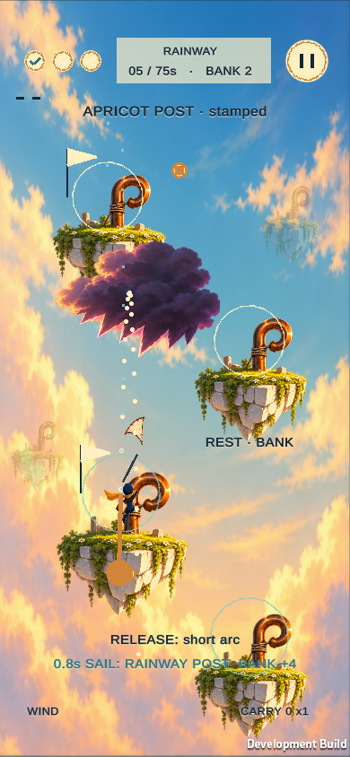

Five games.
Five distinct decisions.
Where the references end and our games begin.
Explore the ingredients, the mutation, the loop, and the case for fun—through images and selectable diagrams.
5 Unity gamesActual build screenshotsTikTok Minis target

01 / Tactile merge puzzle
Kiln Pop
Hextris + 2048One turn. Two problems.
Open visual pitch →
02 / Drilling survival
Burrow Haul
Drill Bunny + IN TOWYour fortune follows you.
Open visual pitch →
03 / Sling-and-sail traversal
Cloudhook Courier
CATAPULT + KITEOne more hook?
Open visual pitch →
04 / Reflection defense
Prism Reef
REFLECTOR + COLOR ROLLA narrower shield. A brighter return.
Open visual pitch →
05 / Garden planning puzzle
Moonlit Harvest
BAMBOO + SUM TENSame sum. Different tomorrow.
Open visual pitch →